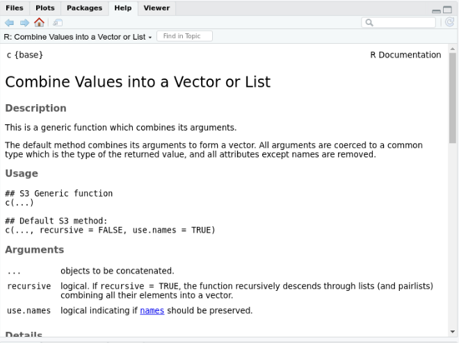

Na aula passada, fizemos uma rápida introdução ao R. Vimos os seguintes pontos:
Hoje, iremos concluir esta nossa rápida introdução discutindo três novos tópicos fundamentais pra o uso do R:
Inegávelmente, estes três tópicos de hoje são mais complexos do que os da aula anterior. E provavelmente compreendê-los demandará algum tempo de prática. Porém, estes três tópicos são fundamentais na vida de qualquer programador, e permitirá a vocês com o tempo expandir, e usar em larga escala, seus conhecimentos de R.
Em qualquer processo de trabalho, muitas vezes precisamos repetir a mesma operação diversas vezes. Por exemplo, precisamos tira a média por grupos em nossa banco de dados, limpar determinada variável em bancos de dados diferentes, e etc. Nesta dinâmica de repetir determinada operação de forma sistemática, loops e funções são fundamentais para tornar nosso trabalho mais eficiente.
Funções são tudo que gera um output em R. Absolutamente tudo. R é definido como uma linguagem funcional de programção, o que significa que todas os comandos que retornam algum resultado em R vêm de uma função. Por exemplo:
# Crie um objeto
x <- sample(1:100, 10)
# Aplique a função para extrair a média
mean(x)## [1] 47.4mean() é uma função pré-definida no R. Assim como a função sample() que usamos acima também.
Diferente de objetos, que usamos para guardar valores, funções funcionam numa lógica de input e output. Chamamos os inputs de uma função de Argumentos, e são os argumentos que vão dentro dos parentesis de cada função.
function(arg1, arg2, arg3, arg4, ....)Como vimos anteriormente, pacotes são somente um conjunto novo de funções que você baixou da internet, e que foi criado para ser compartilhado ao público. Por exemplo:
dplyr: pacote com funções para manipulação de dados.ggplot2: pacote com funções de visualização.wesanderson: funções para gerar paleta de cores dos filmes do Wes Anderson em R.Além dos pacotes, o R vem com alguns funções pré-construídas. Por exemplo, paste(), mean(), sd(), c(), dim(), class(), typeof(), as.character(), ente muitas outras são funções da base do R.
Com base no que discutimos, expliquem-me como a função c() funciona. Qual seu output? Quais os argumentos?
?c
Com frequência, no entanto, estaremos interessados em escrever nossas próprias funções. Mesmo que você nunca crie um pacote em R, as vezes você precisará escrever suas funções para repetir suas rotinas em R.
Vamos construir uma função simples que adiciona dois valores. Aqui, a função terá dois argumentos, em outras palavras, dois valores que precisam ser inseridos para que a função seja executada.
Construir funções ajudará você a optimizar seu código, e principalmente, a compreender melhor os códigos de outros programadores e como seus pacotes funcionam.
some_me <- function( argument1, argument2 ){
value <- argument1 + argument2
return(value) # "return" define qual o output da sua função.
}
some_me(2,3)## [1] 5some_me(100,123)## [1] 223some_me(60,3^4)## [1] 141# Podemos definir valores básicos para cada argumento
# function will still run.
some_me <- function( argument1=1, argument2=2 ){
value <- argument1 + argument2
return(value)
}
some_me()## [1] 3some_me(4,5)## [1] 9A estrutura básica da função é a seguinte:
Exemplo:
nome_da_funcao <- function(x,y,z){ ## Argumentos
### Corpo: o que a função faz
out <- what the function does.
### Conclui Corpo.
return(out) ## output
}
## fecha a funçãoA famosa sugestão de Hadley Wickham - um dos principais desenvolvedores de R.
\[ \texttt{"You should consider writing a function whenever} \\ \texttt{you’ve copied and pasted a block of code more than twice} \]
Teremos uma semana inteira sobre programação funcional em R. Por isso, vamos encerrar por aqui essa breve introdução a funções. Caso você queira se adiantar, pode checar o capítulo 20 do R for Data Science de Hadley Wickham. Ou este excelente tutorial sobre programação funcional escrito por Rebeca Barter
Função são apenas uma forma de reduzir a redundância, e aumentar a transparência dos seus códigos. Um segundo aliado importante é o uso de tecnicas em iteração, em especial, for loops.
Por exemplo, após escrever nossa função, precisamos encontrar uma forma de repetí-la em larga escala. Todas as linguagens de programação - ao menos as que conheço - utilizam loops para este tipo de tarefa. Loops são exatamente o que o nome diz. É uma forma de repetir a mesma tarefa múltiplas vezes. Aqui vamos focar em for loops
Um for loop funciona basicamente iterando determinado código através de uma série de ítems salvo em um objeto de R. O código abaixo printa cada cidade em que morei.
cidades_onde_morei <- c("belem", "sao paulo", "rio de janeiro", "berlim", "brasilia", "dc", "rio de janeiro")
# for loop
for(cidades in cidades_onde_morei){ #iterador
# o que repetir
print(cidades)
}## [1] "belem"
## [1] "sao paulo"
## [1] "rio de janeiro"
## [1] "berlim"
## [1] "brasilia"
## [1] "dc"
## [1] "rio de janeiro"Há dois componentes importantes nos for loops.
for(item in conjunto_de_items): a sequências
–iterador: íterador. ítem que iremos indexar nossas operações. – conjunto_de_items: objeto de onde tiramos nosso iterador.
Os paretesis {}
– Tudo feito pelos loops vai aqui dentro. – Incluindo como você salvará os outputs.
Para tornar os loops mais gerais, normalmente utilizamos \(i\) como iterador, e em formato numérico. O que significa que estamos dizendo ao R para repetir determinada operação indexando cada repetição pelo número \(i\)
Vamos a um exemplo. Vamos escrever o mesmo loop acima, porém usando indexes numéricos.
for(i in 1:length(cidades_onde_morei)){ #iterador
# o que repetir
print(i)
print(cidades_onde_morei[i])
}## [1] 1
## [1] "belem"
## [1] 2
## [1] "sao paulo"
## [1] 3
## [1] "rio de janeiro"
## [1] 4
## [1] "berlim"
## [1] 5
## [1] "brasilia"
## [1] 6
## [1] "dc"
## [1] 7
## [1] "rio de janeiro"Vamos ao nosso último exemplo de loops. Continuaremos trabalhando com os bancos de dados do show “The British Baking”. Desta vez, vamos trabalhar com o banco de dados sobre as avaliações de cada episódio. Nosso objetivos é tirar uma média do sucesso de cada temporada
library(bakeoff)
data("ratings_seasons")
glimpse(ratings_seasons)## Error in glimpse(ratings_seasons): could not find function "glimpse"Vamos fazer temporada por temporada.
# Quantas temporadas?
temporadas <- unique(ratings_seasons$series)
temporadas## [1] 1 2 3 4 5 6 7 8# Média de visualizacao
#Temporada 1
temporada_1 <- ratings_seasons[ratings_seasons$series==temporadas[1], ]
mean(temporada_1$viewers_7day)## [1] 2.77#Temporada 2
temporada_2 <- ratings_seasons[ratings_seasons$series==temporadas[2], ]
mean(temporada_2$viewers_7day)## [1] 3.95125#Temporada 3
temporada_3 <- ratings_seasons[ratings_seasons$series==temporadas[3], ]
mean(temporada_3$viewers_7day)## [1] 5.001Fazer isso para 7 temporadas passara a regra do Hadley Wickham de não repetir o código mais de três vezes. Para nos mantermos fiéis a regra, vamos escrever um loop.
Este é exatamente o tipo de tarefa onde loops podem tornar a vida de alguém mais fácil! Ao fazer um loop por temporadas, podemos automatizar esse processo para que seja muito mais rápido.
Esse processo de abstração do loop funciona essencialmente assim:
Especifíque a duração de algo que deseja percorrer. No nosso caso, é o número de temporadas.
Configure o código de forma que cada iteração execute apenas uma manipulação em um único subconjunto por vez.
Salve o conteúdo de cada iteração em um novo objeto que não será sobrescrito. Aqui, queremos pensar em termos de “empilhamento” dos resultados ou concatená-los.
Na prática, leia seu código, e veja o que se repete e o que se mantêm. E o torne mais geral.
# Crie um container para salvar seus outputs
container <- list()
for(i in 1:length(temporadas)){
temp=ratings_seasons[ratings_seasons$series==temporadas[i], ]
container[[i]] <- mean(temp$viewers_7day)
}
container## [[1]]
## [1] 2.77
##
## [[2]]
## [1] 3.95125
##
## [[3]]
## [1] 5.001
##
## [[4]]
## [1] 7.354
##
## [[5]]
## [1] 10.0393
##
## [[6]]
## [1] 12.311
##
## [[7]]
## [1] 13.563
##
## [[8]]
## [1] 9.017O que acontece se eu alterar o loop dessa forma?
# Crie um container para salvar seus outputs
container <- list()
for(i in 1:length(temporadas)){
temp=ratings_seasons[ratings_seasons$series==temporadas[i], ]
container <- mean(temp$viewers_7day) ## Alteração aqui.
}
containerE desta forma?
container <- list()
for(i in temporadas){ # Aqui
temp=ratings_seasons[ratings_seasons$series==i,] # Aqui
container[[i]] <- mean(temp$viewers_7day) ## Alteração aqui.
}
containerComo toda linguagem de programação, o R possui funções para controle de fluxo. Estas funções controlam sob quais condições determinada função será executada. Obviamente, este controles são fundamentais para execução de funções em R. São com estas funções que o R descobre, por exemplo, qual a classe de um objeto, se um vetor possui valores de missing, ou produz mensagens de error.
Os operadores if, else e else if são os principais controladores de fluxo em R. Vejamos como funciona:
if (condition) {
# Código executa quando a condição é igual a TRUE
} else {
# Executa quando condição é FALSE
}## Error in eval(expr, envir, enclos): object 'condition' not foundEm prática…
ano=2021
if(ano>=2018) {
print("Que saudade de 2013!!")
} else {
print("2013 foi o pior ano da história do Brasil!")
}## [1] "Que saudade de 2013!!"idade= 30
if(idade>=65) {
print("Vacina em Fevereiro")
} else if(idade > 60 & idade <65) {
print("Vacina até junho")
} else {
print("Espere 2022")
}## [1] "Espere 2022"Eu disse na aula passada que o R usa as classes dos objetos para construir suas funções e o que eles podem e não podem fazer. Eu usei o termo “adivinha”. Na verdade, controles de fluxo fazem esta processo de advinhação.
Vamos criar uma função para retirar a média de um vetor numérico. É basicamente desta forma que R constrói suas mensagens de erro.
x <- sample(1:100, 10)
media_tiago <- function(vector){
# advinhacao
if(is.numeric(vector)){
# Calcule a média
mean(vector)
} else{
print("Seu vetor não é numérico")
}
}
media_tiago(x)## [1] 50.8media_tiago("hello world")## [1] "Seu vetor não é numérico"